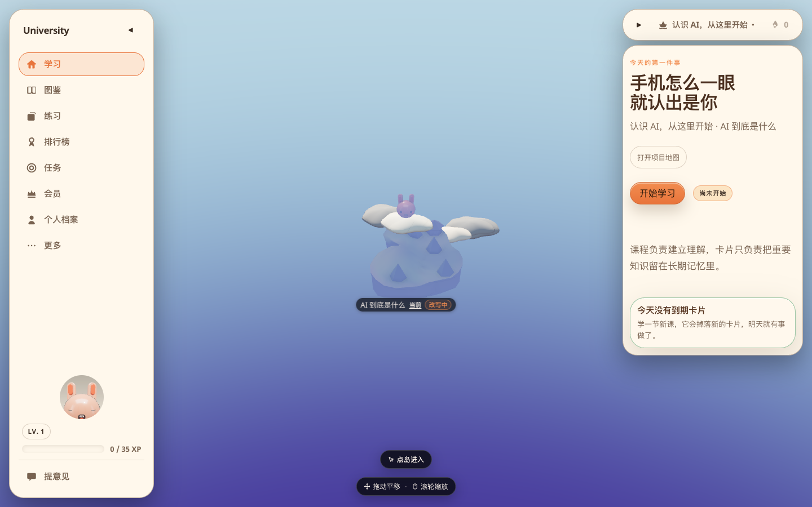
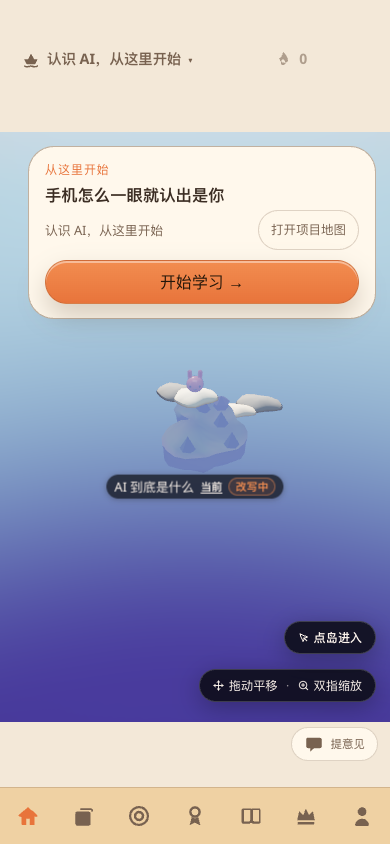
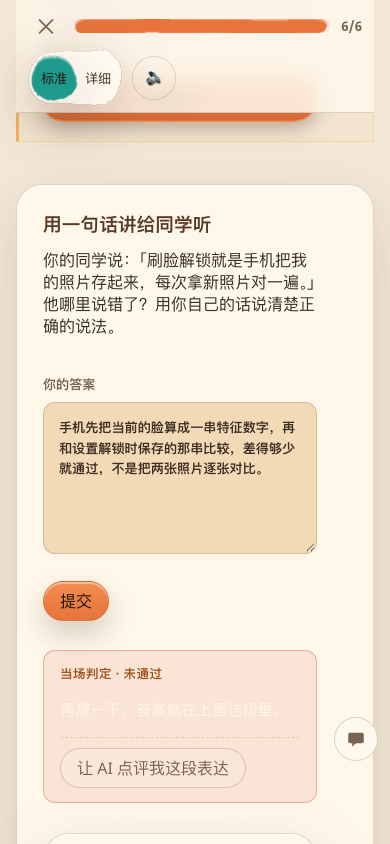
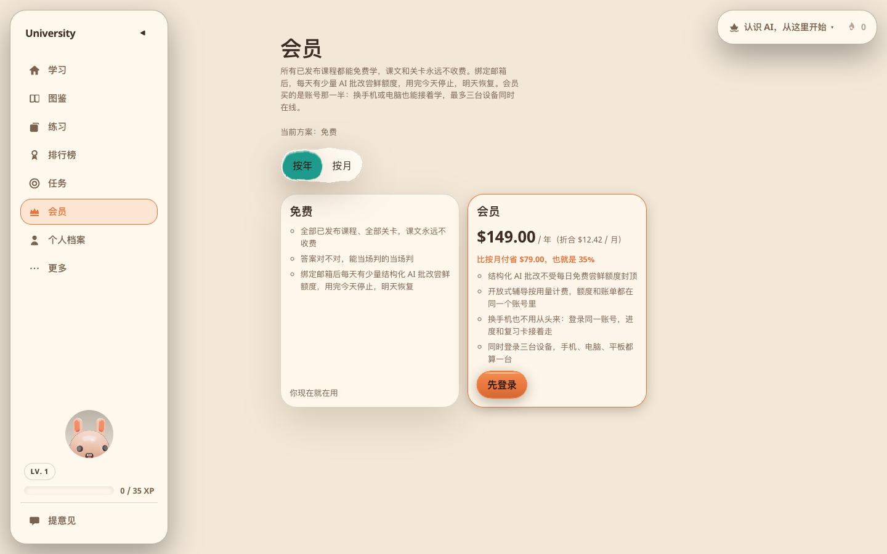
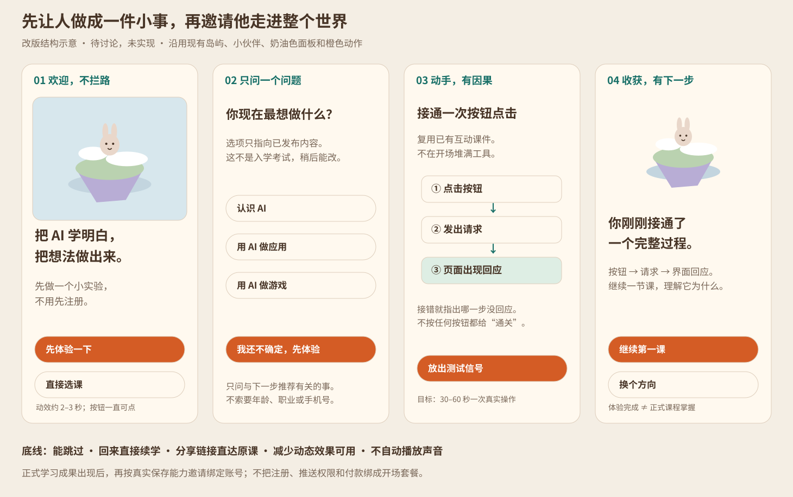
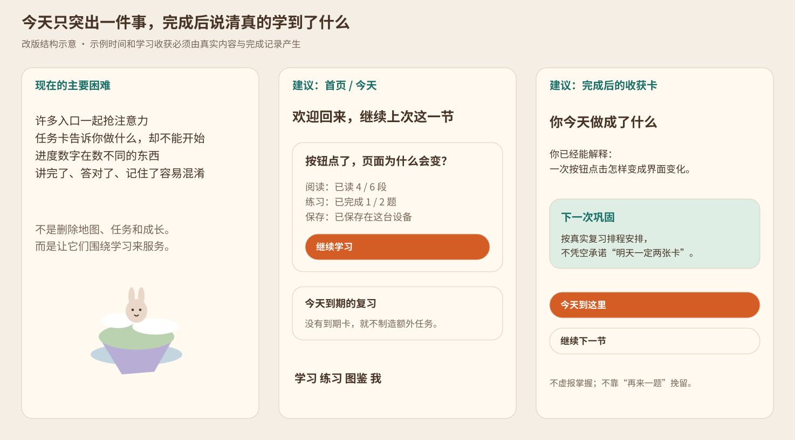
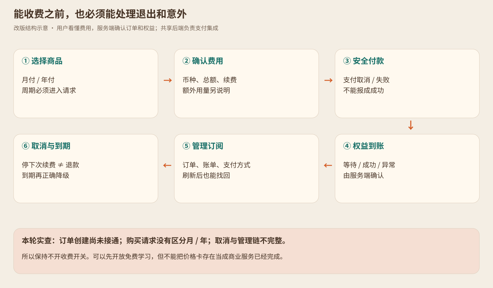

本页由同目录 Markdown 自动生成。真实截图与方案图已明确区分；点击图片可放大。
University：让人愿意开始，也愿意留下
原始三轮检查 · 2026-09-09 · 审查当时只检查与提方案
历史证据提示：以下内容和截图保留原始审查时点。之后用户已授权实施， 最新行为以 V5 产品决定 为准， 代码与验收进展只在 产品完整性计划 更新。 原四步开场提案已收窄为可跳过的单页邀请，不应继续当作待实施的四道必经手续。
想看后来实际改了什么
请打开 改前／改后图文对照，或双击它同目录的 浏览器阅读版。那里按页面排列了改前、改后截图， 也标明原先没有、后来新增的位置。本页保留原始问题和提案，不再重复维护实施后的图集。
原始三轮检查：改动前的发现与提案
现在的 University 像一所已经建好教室、图书馆和操场的学校，但第一次来的人缺一位带路的老师；有些教室里的判题和保存还会让人受挫，收费服务也没有完成从购买到取消的整条路。
所以，下一步不是继续往主界面里塞功能。先把“为什么来、从哪开始、真的学会、不会丢、付费不后悔”接起来。
本文是这次检查的证据和待讨论建议，不是已批准的新产品规则。实现前，涉及首次体验、学习完成、免费与付费边界的决定，应回到 玩家旅程 V5 确认。当前价格和权益以代码为准，本文不另建价格表。
先看结论
你的开场动画建议值得做。但最好的开场不是一段必须看完的宣传片，而是“看懂一句话 → 点一下 → 亲手做成一件小事”。 动画是邀请用户进门，不应成为又一道门槛。
同时，有三件比动画更应该先稳住：第一节里，系统把“暂时判断不了这段表达”显示成“未通过”；未提交的答案刷新后会消失；会员页切换按月、按年，但购买请求不携带所选周期。前两项已在浏览器复现，最后一项由页面行为和购买接口共同确认。目前没有接通真实付款，不能说已经发生了误扣费。
本报告收录 30 项检查与改进事项，不是“30 个程序都坏了”。其中既有确定的问题，也有上线缺口和设计提案；每项都写明证据边界。
这不是把整个项目推倒重来。现有大按钮、课程目标、地图、互动课件、复习机制、错误恢复都可以接着用。
我具体检查了什么
证据身份。 工作树为 /Users/yuanfei/PieAI/University-product，分支 codex/product-ux，源码基线 cea753e。本轮开始时没有未提交改动。检查使用此工作树构建的 delivery 正式包，不是主目录正在运行的旧预览，也没有使用调试摄像机参数。浏览器为 Chrome 153.0.8010.36；电脑 1440×900，手机布局 390×844，补查小屏 320×740，DPR 1、浅色。手机是浏览器模拟尺寸，不是实体 iPhone 或 Android 验收。
课程输入只读自当前主目录的已导出内容，构建时复制到本工作树的正式包；没有重新生成课程。输入 manifest 的 SHA-256 为 ace5a25df9c4ba167cbc842b4dc790c602a180a720aa21664f9a13176ec5bcb0。本次构建产生 463 个课程小节地址。该数量描述本次内容快照，不是未来目录承诺。
没有验证的事。 这个新工作树没有带云账号公开配置，因此未用真实账号收邮件、跨设备同步、调用付费 AI、付款、退款、取消真实订阅或等待次日推送。页面的“云端未配置”是这次环境状态，不能据此宣布线上登录故障。未做真实用户访谈、转化率实验或真机性能测量，也没有执行全部项目回归。
已经运行的验证。 冻结依赖安装、核心包构建、delivery 构建均通过。既有会员、账号、反馈和提醒的 4 个单元测试文件、共 23 项测试通过。这只能证明这些测试覆盖的行为；不能抹掉本轮浏览器发现。4 个页面的自动无障碍检查发现两类问题，且有需人工确认的项目，不能称作全面无障碍通过。
文档规则、路由、索引、链接与文档健康检查均通过，审计与 doctor 均为 0 警告；新登记 10 条有明确证据的体验事项，既有台账校验通过，没有将任何本轮问题擅自标成已修复。全部 7 张正文插图已验证可打开。
完整原始图片和页面记录在 证据目录。每张截图旁边的同名 JSON 保存地址、视口、时点和页面文字。capture-index.json、interaction-index.json、third-pass-index.json 分别对应三轮。
先看“现在是什么样”
电脑：首页像工作台，而不像第一次来时的邀请

真实截图：电脑第一次进入 University · 点击可放大页面确实有“开始学习”，不能说用户无路可走。但第一次来，就要同时理解地图、课程系列、图鉴、练习、任务、排行榜、会员、个人档案和经验值。“我为什么要在这里学？”没有被直接回答。
手机：开始按钮清楚，前后的故事还没接上

真实截图：手机第一次进入 University · 点击可放大这个橙色大按钮应该保留。问题不是再做一个更大的按钮，而是用户点之前是否知道会得到什么，点之后是否很快体会到“这里确实能让我学会”。底部七个入口不等于程序错误，但对第一次来的人有压迫感，是需要验证的设计取舍。
第一节：合理改写得到“未通过”

真实截图：输入一段自己的解释后，出现未通过 · 点击可放大本次输入是：“手机先把当前的脸算成一串特征数字，再和设置解锁时保存的那串比较，差得够少就通过，不是把两张照片逐张对比。”它表达了这节课要求的核心意思。页面却显示“当场判定 · 未通过”，接着要求用户再想一下。问题不在于必须替每个答案判对，而在于 没有判断能力时，不应该给出已经判断错误的口气。
会员页：价格已经摆出来，完整购买服务还没接好

真实截图：当前会员页面 · 点击可放大美元是现有海外定价选择，本身不是错误。真正重要的是：用户能否知道今天能不能买、买的到底是什么、会不会另扣钱，以及以后在哪里取消。
开场应该怎么做

改版结构示意：欢迎、选择、动手、进入第一课 · 点击可放大建议主题：小岛不是装饰，而是“我学会一件事”的可见结果。 沿用现在的奶油色面板、橙色动作按钮、柔和天空和小伙伴，不另外造一个与学习界面无关的霓虹广告片。
第一步：欢迎，但不拦路
初次从首页进入时，小伙伴乘云抵达，一座小岛轻轻亮起。动效约 2–3 秒是设计目标，不是实测最佳时长；按钮从一开始就可以点，不能等动画播完才解锁。
标题建议：“把 AI 学明白，把想法做出来。”
副标题建议：“先动手做一个小实验，再决定从哪里开始。不用先注册。”
主按钮：“先体验一下”。次入口：“直接选课”。已经用过的人有 “继续上次学习 / 登录”，不必重看开场。这里承诺的必须是接下来真实能体验到的内容，不写“几分钟精通 AI”。
第二步：只问一个有用的问题
“你现在最想做什么？”选项先对应已发布内容，例如“认识 AI”“用 AI 做应用”“用 AI 做游戏”。“我还不确定”直接推荐基础体验。不要先问年龄、职业、十个兴趣和每日计划，也不要把未发布领域包装成马上能开始的课程。
此步可以略过；目标只是减少选路负担，不是建立一份复杂个人档案。后来仍能改方向。
第三步：让手指完成一次真实动作
优先复用现有互动课件，例如连接“点击按钮 → 发出请求 → 页面有回应”。用户真的接对一条因果链，结果立即出现；接错时指出哪一步没有回应，再试即可。初版也可选择更贴近 AI 基础的一次观察实验，由课程 worktree 提供内容。
目标是 30–60 秒内完成一次有意义的操作，这是待测的设计目标，不是对所有用户的保证。不能一上来塞五个玩法、三个难度和一排高级工具，也不能按任意按钮都撒花、假装用户学会了。
第四步：告诉他“刚才学到了什么”
文案示例：“你刚刚接通了一个完整过程：按钮发出意图，系统处理后，界面才变化。” 接着只给一个下一步：“继续第一课”，同时保留“换个方向”。
体验成功可以点亮一小块岛，但 不自动冒充正式课程通关、掌握知识或获得认证。正式课程仍须保留既有的阅读、练习和复习证据。保存账号的邀请应该跟在值得保存的真实学习成果后面，并准确说清免费与会员的保存边界。
开场的底线
允许跳过；回来不强制重播；分享来的课程链接直接进原课；动画失败也能学习；系统选择减少动态效果时换静态示意；声音默认不自动响，用户明确选择后才播放。通知、麦克风、注册、付款都不要夹在开场里一起索要。
这些安排与 Apple 对引导“简短、可选、通过操作学习”的建议一致。W3C 对自动运动内容也要求相应的暂停或停止机制；不能把一段装饰动画变成无法摆脱的东西。外部依据见文末，不把设计建议说成已经提高了转化率。
30 项检查结果与改法
读法。 “已复现”是实际操作看见；“代码确认”是当前接口确有缺口；“设计建议”表示事实可见，但商业影响和新方案效果仍需验证；“待联调”表示不能用截图证明服务真正完成。严重程度用“挡路、难受、毛刺”，不需要先理解专业评级。
A. 让人明白为什么来、从哪里开始
01｜第一次来，没有独立的欢迎与价值说明
难受 · 事实已见，方案待讨论。 全新访客打开 /，直接看到地图和主菜单，没有开场解释与首次互动。证据：上面的电脑、手机首页截图。地图操作提示只能解释怎么拖动，不能解释为什么值得学习。
改成什么： 按上面的四步开场接入，并保留直接选课。怎样算改好： 清空测试访客数据后有欢迎；跳过可立刻学习；回访、直接课程链接和减少动态效果路径都不被打断。
02｜先替所有人选了同一门课，没有先问学习意图
难受 · 设计建议。 本次全新首页推荐“手机怎么一眼就认出是你”。这不是坏课，但想做游戏的人未必理解它与自己的目标有什么关系。现有选课入口可以换方向，问题是默认推荐没有解释理由。
改成什么： 用一次可跳过的目标选择决定初始推荐，并写“为你推荐：先理解……”。验收： 不同目标进入对应已发布路径；没有匹配内容时诚实说明，不伪造个性化推荐。
03｜从好玩的地图进入第一课，突然变成大段阅读
难受 · 已观察，改版效果待测。 从首页点“开始学习”，第一节先给较长讲解，实际练习在后面，而且是两道开放文字题。它已有学习目标，不能误报为“课程没有目标”。证据：phone-lesson-start.png、phone-lesson-end.png。
改成什么： 在第一课前段安排一项小观察或可操作实验，让用户先有问题和反馈，再展开解释。不要把全文强行切成几十个“下一页”。验收： 第一项有意义的动作在短路径内可达；操作结果与课程目标一致；不因看过动画自动通关。
04｜开始前，不够清楚这一小节要花多大力气
难受 · 设计建议。 首页推荐卡没有预计阅读/操作时间与简短准备说明，进入目录后又看到一门课 61 节。用户容易把“先试一节”理解成“要承诺完成一大套课”。证据：首页、desktop-catalog.png。
改成什么： 开始卡写“这一节做什么、需要什么、约多久”，估时来自内容长度与实际体验校准，不随意写“只要 3 分钟”。课程总长度放次级信息。验收： 不进正文也能判断是否适合现在开始。
05｜选课能力有了，但入口不够直白
难受 · 设计建议。 首页上方主要显示当前系列名和下拉箭头；/planet 里才清楚出现“选课”。初学者可能把它理解成标题，而不是去其他领域的门。证据：首页和 phone-planet.png。
改成什么： 将入口明确命名为“选课 / 换个方向”，当前系列作为补充；保持地图与课程目录两种浏览方式。验收： 不靠预先讲解，用户能从首页找到另一类课程，再回到原来的学习位置。
06｜手机底部七个入口，首次使用要理解的东西太多
难受 · 设计建议，不是已证实点不中。 390 宽手机中七个入口都可见；本轮没有据此判定全部触控不合格。问题是学习、练习、任务、排行榜、图鉴、会员、我同时争注意力。证据：phone-first-visit.png。
改成什么： 讨论收敛为“学习、练习、图鉴、我”四个主入口，任务并入今天、成长并入我，会员从我或真实需求进入。不是删除这些功能。验收： 高频路径更短，旧链接仍可达，付费需求出现时仍有清楚入口。
07｜目录适合逐层翻，不适合带着问题找课
难受 · 设计建议。 /catalog 展示 37 门课、112 单元和 463 节的树状目录，当前页面没有像图鉴那样的课程搜索框。图鉴已有搜索，不能笼统说“全站没有搜索”。证据：desktop-catalog.png 及同名页面记录。
改成什么： 增加按课程标题和学习目标查找，搭配“零基础 / 做应用 / 做游戏”等少量有效筛选；空结果给换词建议。验收： 找“做网站”能找到对应已发布课程；不把未发布内容混作可开始结果。
08｜还没开始，目录却叫“正在学”
毛刺 · 已复现。 新访客首页显示“尚未开始”，目录中首课和首节却显示“正在学”，同时是 0/61。推荐当前位置与真正学习记录混用了语言。证据：desktop-catalog.png、desktop-first-visit.png。
改成什么： 零学习记录用“推荐起点 / 从这里开始”；打开过或有进度后才叫“正在学”。验收： 全新访客、打开未完成、已完成三种状态的标签一致。
09｜默认入口显示“改写中”，却没有快速说明能放心学哪些
难受 · 设计建议。 默认岛的“改写中”是真实提示，应该保留诚实，而不是隐藏质量状态。问题是首次来的人还不知道它意味着文案正在优化，还是学习流程尚不可靠。证据：首页及 desktop-planet.png。
改成什么： 给简短可展开说明：“当前已开放的内容可以学习；哪些段落待更新、是否影响已学记录”；更理想的是把已按新标准验收的入门体验作为首推。验收： 内容状态来自课程元数据；不批量改成“已完成”来让页面好看。
B. 学习者不能被冤枉，也不能白写
10｜不能判断，被显示成“答错了”
挡路 · 浏览器复现＋代码确认。 第一课第一题提交前文截图中的改写，得到“当场判定 · 未通过”。apps/university/src/ports/online/grading.ts 把确定性判题的 undecided 也转成 passed: false、0 分；页面没有把这种情况与确认答错分开。这个转换不依赖本机是否带云配置。
改成什么： 明确分成“答对、确实有误、这段表达暂时无法自动判断”。不能判断时说“我还不能可靠地判断这段表达”，保留答案并提供查看讲解、修改答案或符合权限的 AI 评估。不要为了让流程变绿就自动判对，也不偷偷开放匿名付费能力。
验收： 对同一正确意思的多种说法、明显错误、空答、服务不可用分别测试；不能判断不生成误导性的错题/掌握结论。用户仍可先继续下一节，本轮已验证这个出口存在。完成标准的调整须先确认 V5。
11｜未提交的答案，刷新就丢了
挡路 · 已复现。 在第一题输入 31 字测试答案，不提交，刷新，再回到输入框，内容长度从 31 变成 0。证据：phone-answer-before-reload.png、phone-answer-after-reload.png 与同名 JSON。ExerciseBlock.tsx 当前输入保存在组件状态中，已提交记录不等于未提交草稿保护。
改成什么： 按账号/访客、课程、题目和内容版本自动保存当前输入，给一句“已保存在这台设备”；提交成功后正确收束草稿，退出账号不串到另一账号。这里的“输入草稿”是替用户防丢，不是给开发流程增加待处理文档。
验收： 刷新、前进后退、切换课程后还能恢复；换题不串答案；课程版本变化给说明；私有答案不进入分析事件。
12｜顶部的“6/6”，容易被当成整课已完成
难受 · 可见事实，理解影响待测。 第一节滑到底部，顶部显示 6/6，下方又说还未完成，并显示下一节为 2/61。这些数字分别在数不同的东西，但画面没有在数字旁说明。证据：phone-lesson-end.png、phone-read-confirmed.png。
改成什么： 写清“阅读 6/6 段”，另给“练习 0/2”；课程小节进度单独显示。验收： 只读完、答题中、正式完成三种状态，不让任何一根进度条冒充另一个状态。
13｜练习没有一个让人安心结束的小目标
难受 · 设计建议。 /practice 明说“题流没有尽头，停下来就行”。自由练习是优点，但想用碎片时间的人缺一个“今天做到这里就可以”的终点。证据：phone-practice.png。
改成什么： 默认提供“练 3 题 / 约一个短休息”的小回合，完成后总结哪里有进步，仍可继续自由练。时间要实测，不先承诺。验收： 结束不强迫加练，不把一次答对写成永久掌握，也不篡改复习排程。
14｜选的是 AI 基础，练习首页却主要在介绍开发概念题库
难受 · 已见现象，推荐方案待测。 当前系列是“认识 AI”，练习页默认展示全题库 281 概念，其中前端 137、AI 25。不能据数量证明算法一定推荐错题，但页面没有清楚回答“这些题与我正在学什么有关”。证据：desktop-practice.png。
改成什么： 默认突出当前课程相关练习，写推荐理由，另保留“探索全部概念”。验收： 切换课程后推荐范围和文案相应变化，没有相关题时不伪造关联。
15｜任务页告诉你该做什么，却不能从任务本身开始
难受 · 已复现。 /quests 的“学一节新课”“把连击接上”是说明卡；本轮控件记录中没有卡内开始动作，用户需要再去点公共导航。证据：phone-quest-actions.json、同名截图。
改成什么： 任务卡直接有“继续这一节 / 开始今天的复习”，完成后原地更新。验收： 点任务进入真实对应内容，返回有真实进度；无到期卡时保持“不计分”，不能凭空制造工作。
16｜叫排行榜，打开却没有人与人的排名
难受 · 已见事实，命名建议。 /league 展示个人记忆段位与“还没有别人可以比”。不编造别人是做对了，但“排行榜”这个门牌仍会制造另一种期待。证据：desktop-league.png。
改成什么： 当前先叫“记忆成长 / 我的段位”；有真实、可选择参与的排行以后，再单独开排行榜。验收： 新名字与页面内容一致，自己的成长解释简单，不用假姓名补热闹。
17｜个人档案还在默认把每位用户当程序员
难受 · 已复现。 /me 写“还没读过真实代码——第一节里就有”，但本轮默认 AI 基础第一节是刷脸解锁讲解和网页来源，不是代码阅读课。证据：desktop-me.png、desktop-lesson-start.json。
改成什么： 通用档案突出学过、练过、复习与做成的能力；只在相关课程中显示代码阅读指标。验收： AI 基础、做应用、做游戏等不同学习路径不再共用不成立的首课承诺。
18｜有些提示在解释开发内部，而不是帮助用户
难受 · 已复现。 例如答题后出现“只看 tier-1 免费提示”，购买弹窗分“它是什么 / 为什么这一端现在做不到 / 以后怎么支持”，任务页解释为什么团队不设计变化任务。用户需要的是下一步，不是阅读内部设计理由。证据：phone-answer-result.json、desktop-payment-gate.png、desktop-quests.png。
改成什么： “tier-1”改“免费提示”；没开售时说“会员尚未开放购买，今天不会扣款。你仍可继续免费学课”；任务页说“今天学一节，再复习到期卡”。详细技术原因放可展开帮助，不删除必要的费用与隐私说明。验收： 关键提示用新手能复述的话，按钮与下一步一致。
19｜“登录后同步”和实际会员权益的说法没有完全对齐
挡路 · 页面＋代码确认，实际跨设备结果待联调。 /me 的标题与未配置说明让人理解为登录就能跨设备同步，而当前 packages/core/src/billing/plans.ts 中免费方案 sync.included 是 false，会员才是 true。旧商业文档曾写免费含同步，不能拿那份旧说明覆盖当前代码。
改成什么： 先确认产品希望免费用户、绑定邮箱用户、会员分别保存到哪里，再统一个人页、设置、会员页的说法。明确区分“这台设备已保存”“账号已绑定”“云端已同步”“等待联网同步”，不能把它们写成同一件事。
验收： 用真实免费账号和会员分别在两台设备检查；断网、失败、退出账号时显示真实状态。未验证到账的云保存不能打绿色成功标记。
C. 收钱以前，要先把购买后的生活安排好
20｜会员在宣传开放式辅导，但本次交付入口没有可用的追问链
挡路 · 承诺已见、交付入口与适配器确认；未测真实付费服务。 会员列出“开放式辅导按用量计费”。当前 delivery 判题适配器提供答题与计量批改，不提供这一路可用的开放追问服务；表达点评入口也会走权限说明或点评包能力。一个权益开关写 true，不等于用户已经能在 App 里持续问老师。依据：billing/plans.ts、ports/online/grading.ts、ExerciseBlock.tsx。
改成什么： 能独立验收之前，付费卡不按已交付卖点宣传；要么标“尚未开放、不计入当前付费权益”，要么先不展示。真正做时，经共享 AI/后端能力接通上下文、追问、费用确认、失败与费用恢复。验收： 从卡住的一题实际进入追问、收到回答、结束会话并核对计费，而不是只看按钮或模型返回一次。
21｜知道付款服务没接好，却先把访客引去登录
挡路（对收费）· 代码确认＋访客路径已复现。 当前 packages/backend/src/payment.ts 只读取余额和权益，没有创建订单的方法。购买可用性却先判断访客是否登录，因此页面显示“先登录”，点后才解释后面的服务还需要确认。证据：会员截图及 phone-payment-gate.png。这与本机缺云配置是两件事。
改成什么： 先明确“尚未开售”；不把注册当成发现缺货的前置手续。若保留“记录购买意向”，要说明是一次兴趣点击还是可收到通知的登记；现有购买点击分析事件不等于已经建立可联系的候补名单。验收： 无订单服务时不伪装成可买，正式可买时才走登录和结账。
22｜按月或按年的选择，没有进入购买请求
挡路 · 代码确认，尚未发生真实扣款。 页面切换价格正常，但 PlansScreen.tsx 始终调用 initiatePurchase({ offerId: plan.id })；两种周期都是 member，当前接口没有带上所选周期。付款那一头无法根据这条请求确认用户刚才选的是哪种。
改成什么： 使用不同的服务端认可商品标识或明确的计费周期，服务端返回确认后的币种、总金额、周期和续费规则；不要相信浏览器随便传来的价格。验收： 月付、年付分别得到匹配订单；登录返回保留选择；重复点击不创建重复扣款；界面金额、订单与收据一致。
23｜买得到之前，就要同时准备好取消和订单恢复
挡路 · 代码确认；沿用旧问题，不重复报新。 现有 PaymentPort 没有管理订阅的入口契约，available 只看能否创建订单，不要求有取消路径。会员页已把“随时取消”的句子限制在 available 状态，这是部分改进，不能继续说当前访客页还在显示该承诺。既有台账：6a7233dd70ba。
改成什么： 形成“购买 → 权益到账 → 查看订单/账单 → 管理续费 → 取消 → 到期后正确降级”的完整路。取消可采用服务商客户门户，不必自己再造支付后台；服务商接入归共享后端。订单页刷新后应能找回，不只存在当前页面内存中。
验收： 在测试支付环境验证支付取消、失败、回调延迟、重复回调、页面刷新、取消续费、到期和退款后的真实权益。不把“停止下次续费”与“立刻退款”混为一谈。没有这些证据，保持不开收费开关。
24｜会员费与额外 AI 用量费之间，还缺一张明白账
难受 · 说明缺口；价格本身不在本轮重定。 当前有美元价格，也有“按用量计费”，但没有让普通用户很快看懂哪些包含、哪些另计以及如何防止额外花钱的完整例子。与旧台账 a006cf7bebd8 相关，不能简单归因为“中文就必须用人民币”。
改成什么： 当前权益、另计服务、每次确认方式、余额不足后的行为分开写；在结账前明确 USD、实际应付总额与是否续费。用一个真实规则下的例子解释“今天普通答题不会另扣什么；选择哪项才另算”。未确定的税费或用量单价不由前端编造。验收： 用户不需要把内部点数换算成钱，也不会把 149 美元年付误看成逐月扣 12.42 美元。
25｜完整的服务说明和账号数据出口，不应该让用户到处猜
挡路（对商业上线）· 已检查页面缺少完整入口，法律结论未作判断。 本轮主导航、个人页、设置与会员页没有形成一处容易找到的服务条款、隐私说明、退款/取消规则、客服和账号数据处理入口。页面已有部分语音隐私说明，不能说“完全没有隐私保护”；也不能仅据这些页面断言所有后端都没有相关能力。
改成什么： 在“我 → 帮助与隐私”集中放清楚入口，购买前可读适用规则；说明数据查看/导出/删除请求如何办理，找得到联系人。经营主体、目标地区、退款规则和具体合规文本由负责人确认，不编造保障承诺。验收： 不付钱、不进开发者工具，也能找到规则和有效求助路径；数据操作要确认身份并有完成回执。
D. 留下来的理由、信任与使用底线
26｜学习状态默认让别人看见，缺少第一次加入时的选择
难受 · 默认开关已见；没有据此声称发生了泄露。 设置页“让小组看到我在学什么”默认打开，说明甚至写“默认开，因为这是学习小组套餐的价值”。本轮没有加入真实小组，无法证明别人实际收到了任何学习状态。证据：desktop-settings-full.png。
改成什么： 在真正加入小组时清楚问一次，解释给谁看、看得到什么，建议默认不共享；可选择只分享成果、不分享当前停在哪一关。验收： 未同意不发送相应状态；关掉后停止；切账号不继承另一人的决定。协议级断言与页面开关都要测。
27｜反馈有降级保存，但普通用户还需要明确的送达出口
难受 · 代码确认，未向真实服务提交意见。 反馈优先发后端，失败或未配置时会退到剪贴板。这能防丢，但“复制成功”并不是“团队已经收到”；技术说明中的路由、视口也不是大多数用户要理解的词。本轮只打开了反馈，没有读取或改动用户真实剪贴板。依据：ports/feedback.ts、phone-feedback.png。
改成什么： 清楚区分“已送达，编号……”与“暂未发送，内容已保留”；后者给实际可用的重试/联系客服方式，不只叫用户去找 AI 粘贴。保留用户写的内容，并用人话说明自动附带哪些诊断信息。验收： 服务器成功、断网、后端拒绝、复制不可用各走一次，任何失败都不报已送达。
28｜提醒开关存在，不等于明天真的会收到
挡路（对提醒承诺）· 待联调，不是本轮证实推送失败。 当前有权限、订阅、服务工作线程和关闭逻辑，这是已有能力。代码的 serverConnected 主要由公开推送密钥匹配推导，不能单凭它证明发送服务运行、账号订阅已到云端或设备收到通知。本轮点击后处在浏览器权限等待状态，不能把那张截图说成无限加载故障。
改成什么： 只有完成真实订阅与送达链后才说“已就绪”；不支持时清楚说明替代办法，仍不在第一次打开时强要权限。验收： 实体 Android 与 iPhone 各自验证，包含允许、拒绝、关闭、后台、到期卡、无到期卡、跨时区和撤销订阅；测试通知与次日任务分开留证。
29｜几处小字看不清，读屏语义也有一处错误
难受 · 自动检查已确认，人工全面验收未完成。 手机首页 .nextup__eyebrow“从这里开始”是 12px 橙色字，检测对比度为 2.84:1，低于该普通文字要求的 4.5:1。会员页也有文字对比度告警。首页 .companions 使用无适当角色的普通 div 配 aria-label，触发 ARIA 使用错误。证据：axe-home.json、axe-plans.json。
改成什么： 通过既有 UI token 调整实际文字对比度，装饰橙色可以保留；同伴区选择正确语义或不要给空装饰区误加名称。验收： 原页面重复检查告警消失，再补深色、键盘、读屏和真机；不能用工具在练习页未报错来宣称全站通过。
30｜已经有行为统计，但还不能完整回答“改版有没有用”
难受（对运营判断）· 代码确认的度量缺口。 productAnalytics.ts 已有打开、学习、答题、复习、注册、会员页和购买请求事件，且不发送学习者答案，应该保留。当前没有新的欢迎完成/跳过、首次真实操作成功、确认付款与权益到账、取消完成等完整事件链；其中支付真相必须来自服务端，而不只是点了按钮。
改成什么： 先定义少量能指导决策的记录：欢迎是否挡路、是否开始第一课、是否真的完成、次日是否复习，以及付款到权益到账是否成功。区分访客点击与实际服务结果。验收： 拒绝统计或配置缺失不妨碍学习；事件不带答案、邮箱和私有材料；去重、版本和成功定义一致。不在没有真实用户数据时宣称转化提升百分之多少。
改后的日常界面，不要再像一张功能清单

改版结构示意：今天只突出一个学习动作，完成后给真实收获 · 点击可放大进入后只有一件最重要的事：继续上次学习，或完成今天到期的复习。选课、图鉴、会员都能找到，但不需要每次争第一眼。
完成后说“你今天做成了什么”，而不只是“+XP”。例如：“你能解释按钮点击后，页面为什么会更新了；还有一处关于请求失败的判断明天回来再试。”示例必须由实际完成记录和题目能力映射产生，不能用漂亮的假总结代替证据。
收费完整性的图，比多一张价格卡更重要

改版结构示意：从购买到取消的服务闭环 · 点击可放大可以先把产品作为免费体验开放，但收费开关应由整条服务链决定，而不是由价格卡已经画好决定。浏览器只展示服务端确认的订单和权益；共用的账号、钱包、支付能力继续归 SwimmerBackend。退款和取消政策是需要负责人确认的商业决定，本轮没有擅自决定。
哪些东西不应该推倒重做
首页橙色开始按钮清楚；所有已发布课程可进入；第一课确实有学习目标；阅读确认与练习通过分开；没完成也能先去下一节；复习和错题能力已有基础；试玩场明确说明不计课程成绩；排行榜没有伪造同学；出现课程资料故障后有退出和重试。
其中，资料恢复不仅看了按钮：本轮人为阻断内容请求后解除阻断，点击“重试课程资料”，首页与开始学习入口恢复。证据：phone-content-failure.png、phone-content-recovered.json。这项要保留回归，不应该为加开场动画再破坏它。
怎么分工，才不会和其他 worktree 互相撞车
本轮只在当前 worktree 保留报告、证据和检查工具，并把确定的新问题接到既有体验台账。没有提交、推送、合并、发布或改动课程/视觉 worktree；没有自动开始修复。
建议的完成线
第一道线：新用户不会被冤枉、不会白写。 不能判断不等于答错；输入不会因刷新消失；学习进度与保存位置说得明白。
第二道线：新用户愿意走到第一节结束。 欢迎可跳过、有一次真实小体验、默认推荐有理由、下一步清楚。先拿可操作路径验证，再找真实用户检验文案理解与完成率；不是先追求动画时长或“酷炫分数”。
第三道线：收费之后找得到退路。 商品周期、付款金额、到账、异常恢复、取消和客服都真实可用，条款与产品一致。未完成前不开放真实收费。
第四道线：第二天还能自然回来。 已学成果能找回，复习有意义，提醒真的到达且能关闭；遗漏一天不靠羞辱文案逼人补课。
这四道线完成以后再扩张功能，比一次增加十几个入口更有价值。这是本轮产品判断，不是已经测得的商业回报。
与旧记录怎样相处
本文不重复登记旧的取消问题 6a7233dd70ba，也不把海外美元价格本身再报一次错误。旧商业说明中的“免费同步”已经与当前权益代码不一致，本轮明确按代码识别冲突，最终边界需要负责人确认。已有默认摄像机以外的视觉诊断问题，不拿来冒充当前普通用户截图问题。
新开场、导航收敛、练习回合等属于待讨论的提案，不因为写进报告就成为批准需求。下一步应先讨论最重要的批次，再更新 V5 和相应实施计划；这份检查报告保留其检查时点身份，不变成第二套长期规则。
外部参考与证据说明
外部资料只用来支持设计方法和服务接法，不替代对本项目的实查。以下官方资料在本轮检索；不引用旧商业文档里的市场价格、成本或法律判断作为今天的事实。
原始检查脚本在 .scratch/product-audit/；脚本、截图、自动检查都不是真实用户研究。方案图明确是结构示意，不是本轮已经实现的新界面。所有推荐均可被后续更好的实际证据修正。